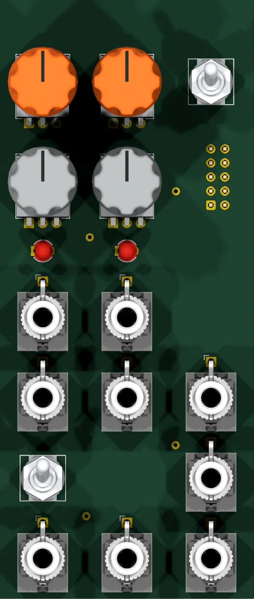
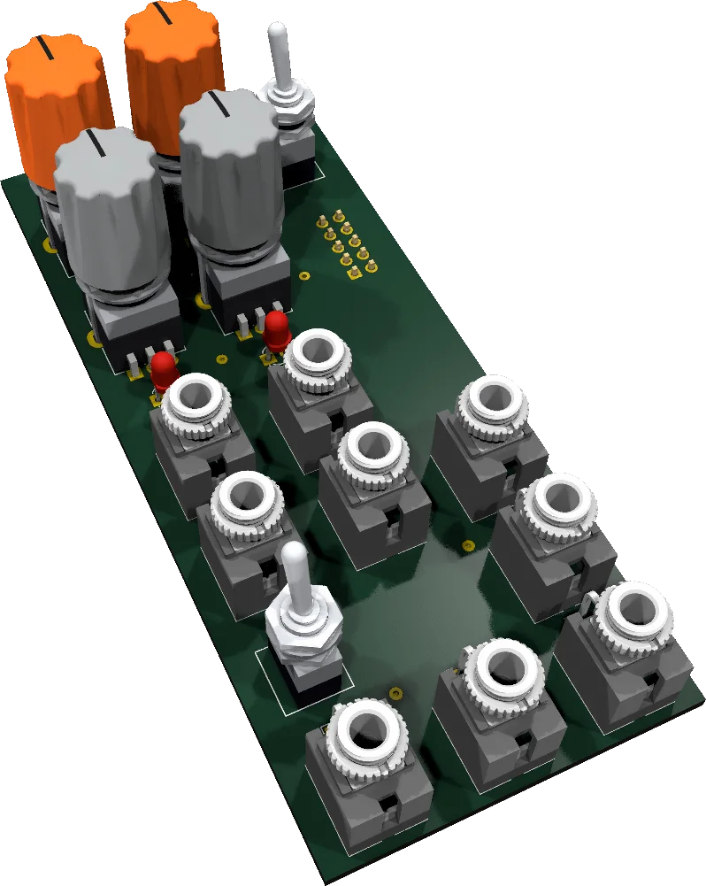
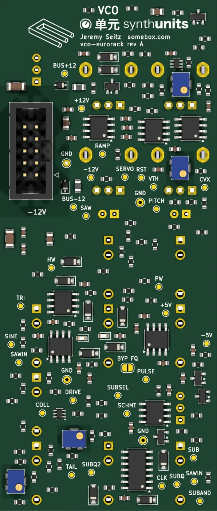
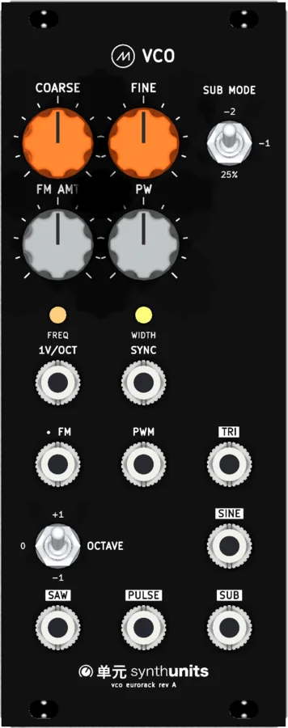
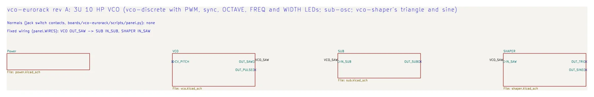
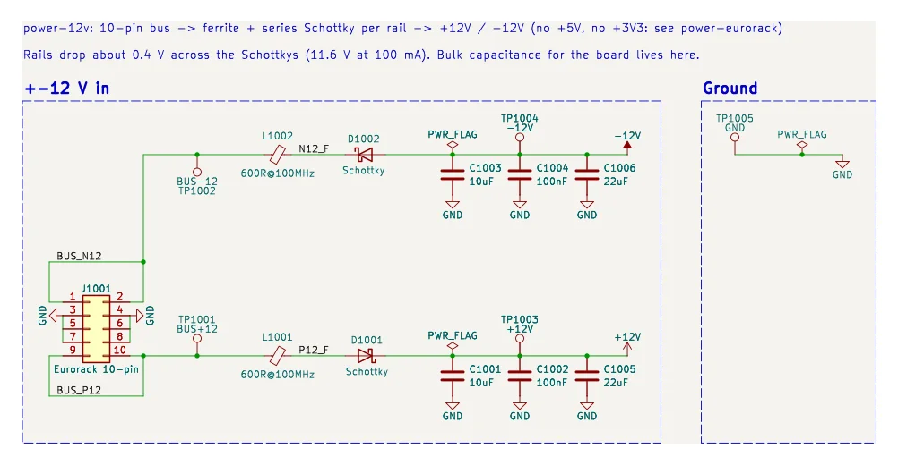
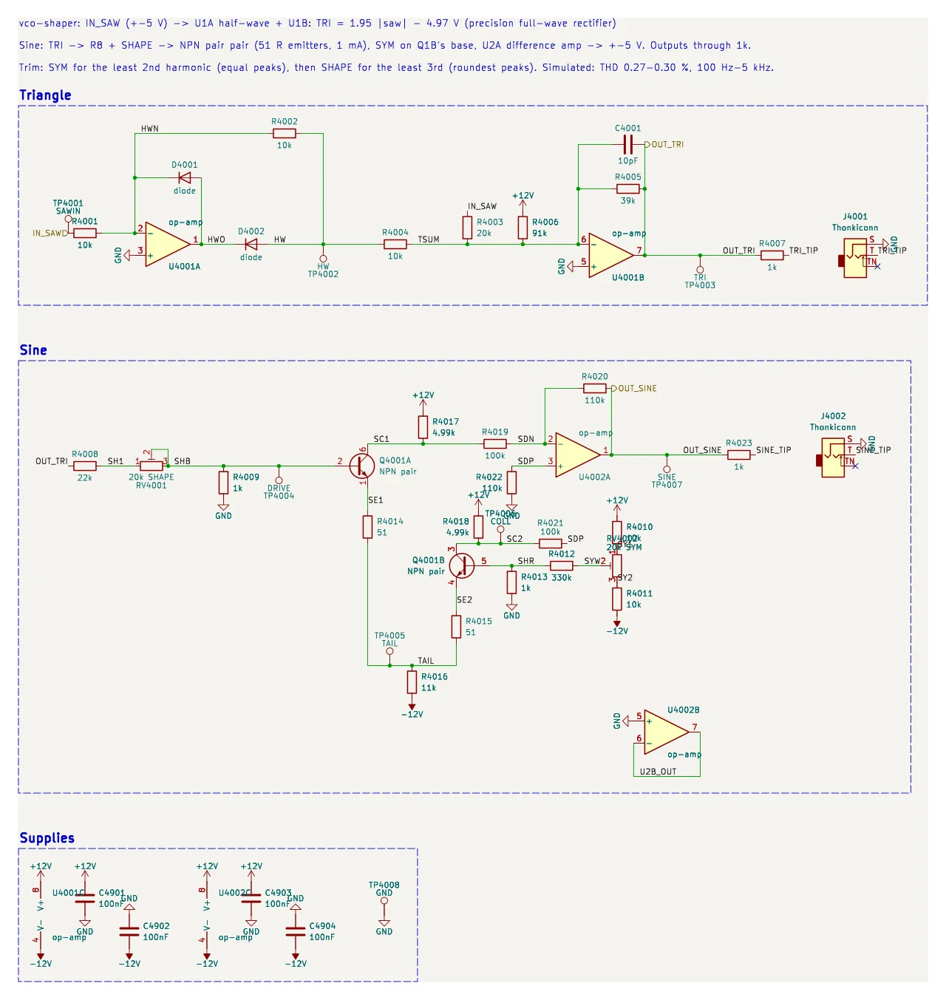
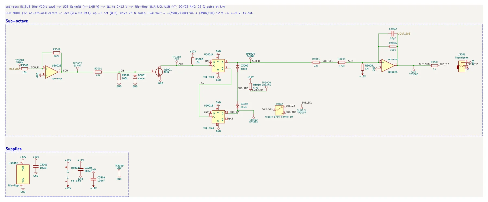
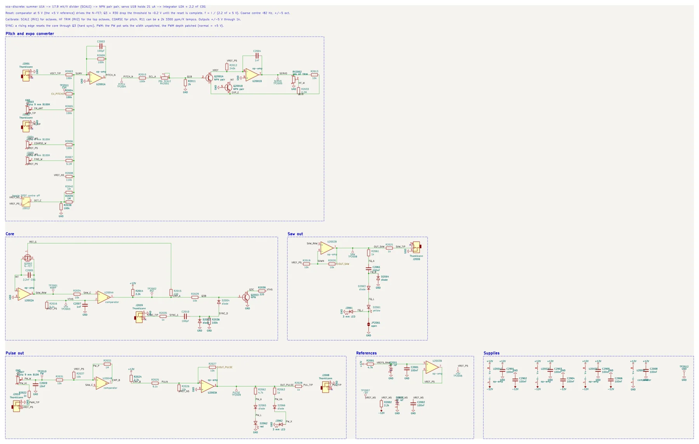

VCO, 10 HP: saw, pulse, sub, triangle and sine
The full VCO as a 10 HP Eurorack module: PWM, sync, a three-mode sub-octave, triangle and sine.
The full version of my VCO as a 3U, 10 HP Eurorack module: one board behind an FR4 front panel, with the jacks, pots, toggles and LEDs soldered to its front under their holes and every SMD part on its back. It is three of the series' blocks: the same discrete exponential core as the VCO minimodule, here with PULSE WIDTH and PWM; a sub-oscillator (a dual flip-flop dividing the saw) with three modes; and a shaper that folds the saw into a triangle with a precision rectifier and rounds the triangle into a sine with a degenerated differential pair.
It is a design in progress: the parts are placed and the panel is drawn, but the board isn't routed yet.
In a patch it covers what a voice asks of one oscillator: a saw and a modulated pulse for the filter, a sub an octave or two down, and a sine for FM or a clean tone.
- Status
- In design: parts placed, not routed yet
- Board
- 46 × 108 mm, 2 layers




Block diagram
Drawn by the site's generator from the board's own data: its blocks, its connectors and the links between them. The pots and switches are listed in the block they set.
What it does
- Outputs: SAW, PULSE, SUB, TRI and SINE, each about ±5 V through 1 kΩ.
- Inputs: 1V/OCT (100 kΩ), FM (exponential, depth on FM AMT), PWM (about 11 kΩ, depth on PW), SYNC (hard sync on a rising edge).
- Range: COARSE ±5 octaves (2.6 Hz to 2.6 kHz), FINE ±1.2 semitones, OCTAVE switch ±1 octave.
- Pulse width: unpatched, PW sets 50 % down to about 4 %; with PWM patched it sets the depth round 50 %.
- Sub: a square one or two octaves down, or a 25 % pulse two octaves down, after the SH-101's sub switch.
- Sine, simulated at 1 kHz: about 0.27 % THD once trimmed. Triangle: odd harmonics within 0.1 dB of an ideal triangle's.
- Tracking: within 2 cents over five octaves in simulation. Not measured.
- Power: Eurorack 10-pin, about 33 mA on +12 V and 22 mA on −12 V, estimated; no +5 V needed.
- Size: 3U, 10 HP; the board 46 × 108 mm, 2 layers, behind a 50.5 × 128.5 mm panel; 4 pots, 9 jacks, 2 toggles, 2 LEDs.
Wiring and setup
- Power: a Eurorack 10-pin ribbon, −12 V marked beside pin 1; a ferrite and a series Schottky on each rail.
- Panel parts: Thonkiconn jacks, Alpha 9 mm pots, two on-off-on Dailywell sub-mini toggles (OCTAVE and SUB MODE) and two 3 mm LEDs (FREQ yellow, WIDTH red), soldered to the board under their holes. The panel's back rests 10 mm above the board on the jacks' shoulders and the pots' faces, and the panel nuts hold the board: no brackets. The LEDs go on spacers.
- Normals: PWM's switch contact carries the core's 5 V reference, so PW sets the width with nothing patched. FM, 1V/OCT and SYNC have none.
- Fixed wiring: the saw into the sub-oscillator and the shaper.
- FREQ: the panel LED runs in series with the on-board one, across an open solder jumper (BYP FQ); bridge it to run without the panel LED.
- Calibrate warm: SCALE and HF TRIM for 1 V/oct, as on the VCO minimodule; then SYM for equal peaks (the least 2nd harmonic) and SHAPE for the roundest peaks on the sine, and SYM again. All four multi-turn trimmers are on the back, reachable from behind.
- 34 test pads on the back. Probe RAMP and RST (the core), +5V, CLK (the sub's clock), then TRI and SINE.
Limits and open questions
- A placement mockup: parts placed, not routed. Not reviewed yet, not built.
- The IN jack (a saw normal into the sub and the shaper, so they can shape other signals) has no circuit yet. Its place on the board is kept free, and this panel has no hole for it.
- With a panel LED in series, FREQ is dim in the bass: about 17 µA at 30 Hz, 0.3 mA above 3 kHz (simulated). Pick a bright 3 mm LED.
- The core's known limits apply, as on the minimodule: no tempco, so calibrate it warm; screen the reset comparator warm at bring-up; check the references before anything else.
- The sine's trim holds for one temperature: trimmed at 27 °C, its distortion rises to about 0.7 to 0.8 % at 10 or 45 °C (simulated).
- The toggles' bushings sit in 6.2 mm holes and can slide a little before their nuts are tight.
Development notes
- The VCO went two ways: a simple core on the minimodule, and everything on this board. I compared one 10 HP board with an 8 HP core plus an expander, and a simple version with a full one, before settling on three 3 HP columns: pitch, the pulse, and the sub with the shaper.
- It is built by the same scripts as the voice: one layout file drives the schematic's normals, the parts' positions and the panel's holes and legends. Unlike the voice it keeps the module-board extras: the OCTAVE switch and the FREQ and WIDTH LEDs.
- Next: route it, add the IN jack's circuit and its hole, then a review against the blocks, the LEDs' height and the toggles' holes. Two spots stay free for later: a second knob and LED in the third column.
Schematic
The schematic as drawn, with each chip named by its function rather than its part number. The design isn't open source yet, so there are no files to download.










Would you use a VCO 10HP? A thumbs-up on its tracking issue is how I count interest, and you can subscribe there to follow its bring-up. Questions and ideas go to the discussions.